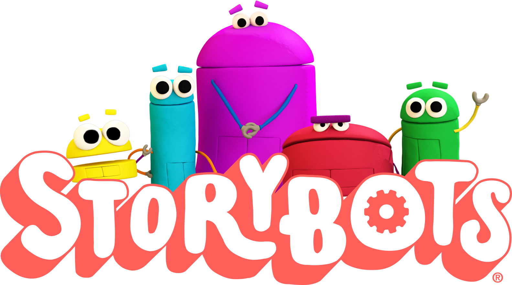
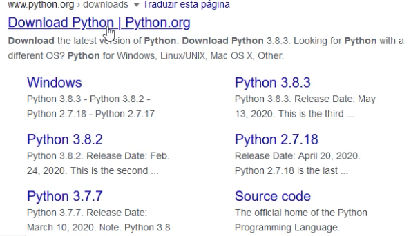
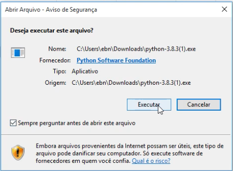
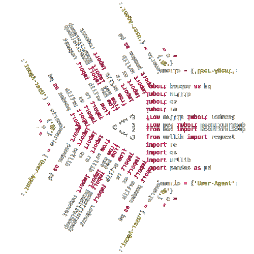

Historiadores rodando Python!?
Uma Introdução
Oficina - LABHD-UFBA, 2020-06-26
Vídeo completo da oficina no YouTUbe:
Brevíssima apresentação do Python
Direto do Wikipedia:
Definição de linguagem de programação
:
“é um método padronizado, formado por um conjunto de regras sintáticas e semânticas, de implementação de um código fonte - que pode ser compilado e transformado em um programa de computador, ou usado como script interpretado - que informará instruções de processamento ao computador.”
Direto do Wikipedia:
Definição de linguagem de programação
:
“Permite que um programador especifique precisamente quais os dados que o computador irá atuar, como estes dados serão armazenados ou transmitidos e, quais ações devem ser tomadas de acordo com as circunstâncias.”
Extras [1]
Curso em Vídeo no YouTube
Curso de Python 3 básico.
Extras [2]
Lo and Behold: Reveries of the Connected World de Werner Herzog, 2016.
Explicando, temporada 2: Código de Programação, Netflix.
Extras [3]
Como os computadores funcionam? Pergunte aos Story Bots, Netflix.
Instalando o Python no Windows 10
Não vem instalado no Windows, como no Mac ou Linux.
Podemos testar pra saber se há alguma versão de Python instalada no seu Windows
- Busque por "prompt de comando"
Python tá instalado?
python --version
Digite no terminal e tecle ENTER.
Baixando o Python
Abra o navegador e busque "python download"
Ou simplesmente, clique aqui!
Faça o download da última versão do python (atualmente é a versão 3.8.3) para seu sistema operacional.
Instalando o Python
Após o download concluído, abra a pasta onde o arquivo foi salvo e clique duas vezes para iniciar a instalação.
Marque a opção de incluir o Python ao PATH.
Clique em Install Now.
Criando e executando o primeiro código em Python
Para evitar trabalhar no terminal, podemos abrir o IDLE que já vem junto com o python
Acesse a pasta do Python em seu computador ou pesquise por IDLE
É uma IDE bem simples, mas que nesse início ajuda a visualizar melhor o código.Vc vai programar agora!
print('Olá, Mundo')
Olá, Mundo
2+5
7
var = 'Eric'
print('Olá, '+var)
Olá, Eric
Baixando o Script-Anais-Anpuh

Acesse o repositório no Github: github.com/ericbrasiln/
- Clique em repositórios e depois no repositório Anais-Anpuh;
- Faça download da pasta zipada.
- Descompacte a pasta;
Instalando os pacotes e bibliotecas necessárias
Abra o terminal e rode os seguitnes comandos:
pip install bs4
pip install pandas==1.0.1
pip install requests
pip install lxml
pip install wget
Entendendo o código.
script-anais-anpuh.py
from urllib.request import Request, urlopen, urlretrieve
from bs4 import BeautifulSoup
from urllib import request
import re
import os
import urllib
import pandas as pd
dicionario = {'User-Agent': 'Mozilla/5.0 (X11; Linux x86_64) AppleWebKit/537.36 (KHTML, like Gecko) Chrome/80.0.3987.163 Safari/537.36'}
urlbase = 'https://anpuh.org.br'
url = 'https://anpuh.org.br/index.php/documentos/anais'
listaFinal =[]
linkAnterior = ""
# Acessa a página inicial dos Anais.
reqopen = Request(url, headers=dicionario)
req = urlopen(reqopen)
bs = BeautifulSoup(req.read(), 'lxml')
# Define e cria a pasta para salvar cada evento.
print('Criando pasta de salvamento...')
pasta = os.path.join('Anais Anpuh', 'pdf')
if not os.path.exists(pasta):
os.makedirs(pasta)
#Define os links para cada evento.
print('Criando a lista de eventos a partir da página principal...')
boxAnais = bs.find(id='cobalt-section-1')
links = boxAnais.find_all('a', href=re.compile(r'(1-anais-simposios-anpuh/)'))
script-anais-anpuh.py
for linkAnais in links:
acabou = False
linkEvento = linkAnais['href']
linkEventoFinal = urlbase + linkEvento
numEvento = linkEvento.replace('index.php/documentos/anais/category-items/1-anais-simposios-anpuh/','')
# Acessa as páginas de cada evento e raspa os pdfs.
while acabou == False:
response = request.urlopen(linkEventoFinal).read()
soup= BeautifulSoup(response, "html.parser")
#Encontra a caixa com os papers
paperBoxes = soup.find_all(class_='has-context')
print('Encontrando todos os papers da página...')
pastaEvento = os.path.join(pasta, numEvento[1:])
print('Encontrando todos as informações dos papers da página...')
O que o script faz a partir daí?
- encontrar as infos de cada paper;
- inclui essas infos na lista final;
- busca se há pdf disponível e se ele não é repetido;
- faz download do PDF
- busca a próxima página de papers do evento;
- se não houver, passa para o próximo evento e repete...
Rodando o script
Botão dirieto no arquivo script-anais-anpuh.py e escolha 'abrir com IDLE'.
Aperte F5 para executar!

Contatos
- Mande um e-mail, profericbrasil@unilab.edu.br
- visite meu site...
- e siga no Twitter!
Feito a partir do Reveal.js